Rubble · le Champ (niveaux 1 à 18) — cartes brutes
Des plans en cases de couleur, pour juger la composition. Chaque carte dit le chemin voulu, l'éclat (obligatoire : il réveille la sortie) et le piège.
L'univers de règles (matières, capacités de Nib, rebondissements)
Rubble · le Champ du dernier combat (niveaux 1 à 18) — l'univers de règles
Florian, 08/10/2026 : « ce premier niveau est vraiment trop facile… le game design est vraiment pauvre… des niveaux très originaux, des énigmes un peu dures à résoudre sur comment utiliser les pouvoirs du sceptre, de l'adresse » ; « surtout conserve l'idée d'origine du jeu (la magie des métaux) » ; « un univers riche en termes de règles et réglages des obstacles… des rebondissements » ; « toutes les cartes de manière brute pour la première région… puis une review complète ».
Base : le document proto/porte-moi-99-niveaux.md (les 18 niveaux du Champ et leurs matières), le prototype v4, le canon (doc 3). Ce fichier est la proposition : ce que Florian garde entre ensuite dans REGLES-DU-JEU.md, matière par matière, avant le code.
1. Ce qui ne bouge pas (la signature)
Un doigt, deux verbes de métal : doigt sur du métal puis glisser vers Nib = tirer, à l'opposé = pousser ; doigt ailleurs = la halte. Jamais deux à la fois.
La règle du poids : le plus léger bouge. Planté, rivé, coincé ou tenu = très lourd. Poids égaux : chacun fait la moitié du chemin.
Nib n'est jamais dirigé : il marche seul, hésite 0,7 s au bord, fait demi-tour aux murs.
La secousse : le Géant tombé à l'est ; annoncée 3 s avant ; elle pousse tout le métal libre vers l'ouest (la gauche), recule Nib d'une case au sol (son anneau de fer), le déporte en l'air, arrache ce qui est fiché dans la pierre fissurée, affole les bêtes. Danger et aide à la fois.
2. Les capacités de Nib (mesurées dans le jeu, 08/10)
Valeur
Ce que ça veut dire pour une carte
Marche
0,85 case/s
traverser 8 cases : 9 s ; il a le temps de croiser une secousse
Hésitation au bord
0,7 s
la fenêtre où l'on agit sans retenir
Demi-tour
2,1 s
un mur = 2 s de répit
Portée du fil
5 cases
au-delà, rien
Force du fil
60 ÷ (1 + (d ÷ 2,5)²)
égale la pesanteur à 2,5 cases : un bouclier plus haut que 2,5 cases ne soulève plus Nib, il le tire de côté
Poussée à fond depuis un appui voisin
≈ 4,3 cases à l'horizontale pour 1 case de descente
un gouffre de 4 cases se franchit d'une poussée
Poussée vers le haut (appui au ras du sol)
≈ 1,9 case ; 3,4 si Nib est plaqué contre un mur
un mur de 2 se franchit d'une poussée, un mur de 3 demande le mur pour appui
Chute sans mal
≤ 2 cases (impact ≤ 11 cases/s)
une marche de 1 ou 2 se descend en marchant ; 3 et plus tuent, sauf freinage par le fil
Secousse
toutes les 7 s (réglable par niveau : 5 à 12 s), annonce 3 s
1 case de recul au sol
3. Les matières (une par niveau, puis elles se combinent)
Chaque matière est un objet de métal (ou un sol qui change ce que fait le métal). Coût : D = données, R = rouages, M = moteur, I = image.
#
Matière
Règle
Réglages
Niv.
Coût
M1
Bouclier planté
fixe : le tirer amène Nib, le pousser le repousse
—
1
fait
M2
L'éclat de Kinrei
flotte ; réveille la sortie ; obligatoire
1 par niveau, placé là où il faut le geste du niveau à son meilleur
1
fait
M3
La chute
> 2 cases = il se fait mal ; le fil tiré pendant la chute freine
impact 11 cases/s
1
fait
M4
Pièce (métal léger)
tirée, elle vient ; poussée, elle part ; roule, tombe ; la secousse la balaie vers l'ouest
poids 0,1 Nib ; frottement
2
M, I
M5
Rainure / fissure de paroi
une pièce qui y tombe se coince : elle devient un appui fixe
—
2
R, I
M6
La lance de Nib
tirée, revient dans la main ; en main : glisser puis lâcher = elle part et se plante au premier sol ou mur ; plantée = appui ; tirée = revient
vitesse de jet ∝ glissé
3
M, I, animation
M7
Roche / boue
la roche tient tout ; dans la boue, la secousse arrache ce qui est planté
—
3
R, I
M8
Chariot sur rails
pèse comme Nib : tirer = chacun fait la moitié ; Nib peut y tomber dedans ; la secousse le pousse ; un poteau de fer le freine (pousser) ou l'accélère (tirer)
poids 1 Nib ; frottement des rails
4, 16
M, I
M9
Pierre fissurée
se brise 1 s après que Nib s'y arrête (halte, réception) ; la secousse la brise aussi
1 s
5
R, I
M10
Appui rivé / appui fiché
rivé : tient toujours. Fiché (dans la fissure) : la secousse l'arrache et le lance vers l'ouest comme un projectile — accroché au fil, Nib part avec
vitesse d'arrachage 9 cases/s
6
M, I
M11
Poulie et contrepoids
tirer le contrepoids (fer) fait monter la plateforme tant qu'on tire ; la secousse lui donne un cran d'une case
1 case par secousse
7
M, I
M12
Hampe à bout de fer
doigt tenu sur un bout de fer au-dessus de Nib : il se balance au bout du fil (pendule) ; lâcher au point haut = saut
longueur du fil = distance au moment du toucher
8
M
M13
Coffre éventré, pluie de pièces, saillies
à chaque secousse, le coffre lâche 3 à 5 pièces ; une pièce ne soulève que quand elle touche une saillie
—
9
R, M
M14
Caisse cerclée
trop lourde pour le fil (planté) ; Nib la pousse en marchant ; la secousse la repousse d'une case
poids 3 Nib
10
M, I
M15
Armes plantées
appuis ; tirées plus de 1,5 s, elles s'arrachent et viennent dans la main (comme la lance) ; on peut les replanter
1,5 s
11
R
M16
Chaîne pendante
la lance jetée par-dessus puis rappelée s'y accroche : Nib pend au bout ; la secousse balance toutes les chaînes ensemble
période du balancement 2 s
12
M, I
M17
Bêtes (biche, sanglier, ours)
ont peur de la secousse (elles fuient vers l'ouest) ; le doigt sur une bête : vers Nib = calmer (pierre froide), à l'opposé = exciter (pierre chaude) — le même geste que tirer/pousser ; ça use l'essence
1 fiole = 2 s de calme ou 1 charge
13–15
M, I, animation
M18
Fiole derrière une grille de fer
la grille est du métal : la tirer l'ouvre ; la fiole remplit l'essence ; une fiole gardée passe au niveau suivant
—
13
R, I
M19
Armure
Nib la ramasse en marchant dessus : plus lourd (la secousse ne le recule plus, une pièce ne le soulève plus, le fil le soulève moitié moins) ; doigt tenu sur l'armure 1 s = il la pose
poids ×2
17
M, I, animation
M20
La Chasseuse
sur une crête ; tire tout le métal libre ou fiché à moins de 3 cases d'elle (fils fins, rouges) ; ne peut rien contre le métal tenu, rivé ou planté dans la roche ; la secousse la frappe aussi
portée 3 cases
18
M, I, animation
4. Les rebondissements (le geste connu qui rencontre une matière nouvelle)
D'après le skill de scénario (« la trouvaille naît d'un geste connu qui rencontre une matière nouvelle ») et le document des niveaux :
Le même bouclier sert à venir et à repartir (1) : tirer puis pousser, sans rien de nouveau.
Pousser une pièce ne sert à rien… sauf coincée (2) : la règle du poids se découvre à l'envers.
La lance, c'est un bouclier qu'on emporte (3) — puis un crochet (12).
La halte devient un piège (5) : s'arrêter sur la pierre fissurée la brise ; il faut retenir Nib au bon endroit.
Ce qui casse transporte (6) : l'appui arraché par la secousse emporte Nib là où aucune traction ne mène.
La secousse donne le cran que le doigt n'atteint pas (7) ; l'élan du bon côté (8).
Une pièce en l'air ne soulève rien (9) : le moment du contact.
Nib a sa propre force (10) : sans magie, il pousse.
Tirer longtemps arrache (11) : on construit son propre chemin, l'ordre des prises dessine la route.
Calmer = tirer, exciter = pousser (13–14) : le même geste sur une bête ; chaque pouvoir a un prix (essence) ; le prix se paie plus tard (15).
Être lourd (17) : la règle du poids appliquée à Nib lui-même.
L'ennemie joue avec nos règles (18) : ce qui est tenu ou planté dans la roche lui résiste ; la secousse la frappe autant que nous.
Fil rouge de la région : la secousse apprivoisée — d'abord un danger qu'on subit (1), puis une aide qu'on attend (6, 7, 8, 14), enfin une arme (18).
5. L'éclat : obligatoire, et ce qu'il demande
Il réveille la sortie : sans lui, pas de fin de niveau (règle du 08/10, § 10). Il est placé là où le geste du niveau doit être fait à son meilleur (une poussée à fond, un bon timing avec la secousse, l'ordre des prises…), jamais sur le chemin facile.
Les idées « pour l'éclat » du document des niveaux (« traverser sans retenir », « sans dépenser une goutte »…) deviennent des défis facultatifs notés à part (une marque sur la carte du monde), pour qui veut la maîtrise : à trancher par Florian.
Les éclats comptés servent ensuite à reconstruire les villages (canon) : à trancher plus tard.
6. Ce que la difficulté fait monter
Axe
Niveaux 1–4
5–9
10–14
15–18
Gestes à enchaîner
2–3
3–4
4–5
5–7
Timing avec la secousse
la voir
l'attendre
s'en servir
la provoquer contre l'ennemie
Adresse (dosage du glissé, moment du lâcher)
faible
moyenne
moyenne
forte
Lecture (quel objet est léger, rivé, fiché…)
une matière
deux
trois
toutes
Erreur
coûte un essai (reprise < 1 s)
idem
idem + une ressource (essence)
idem
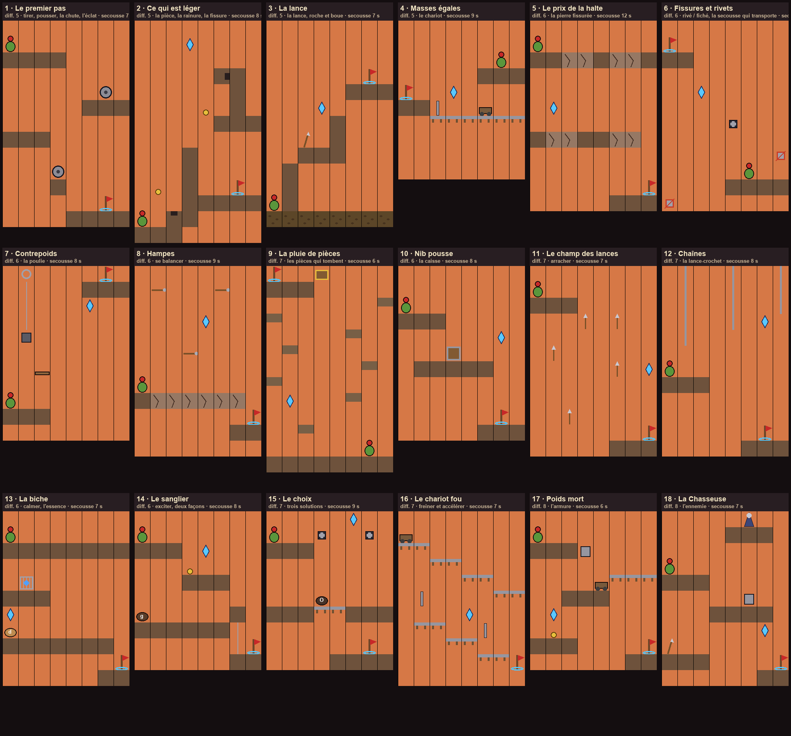
1 · Le premier pas diff. 5 · tirer, pousser, la chute, l'éclat
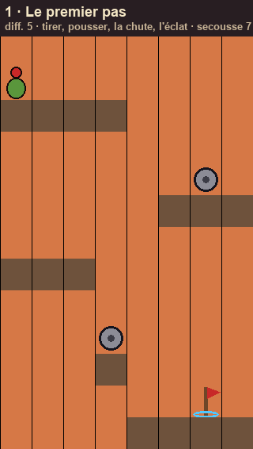
chemin : Nib marche, hésite au bord du départ ; la 1re secousse (4 s) le recule d'un pas, sans danger. Tirer A : il vole jusqu'à la terrasse (3 cases plus bas : se jeter = se blesser). Demi-tour au mur, retour au bord gauche : pousser A, il vole à gauche sur la corniche L (2 plus bas). Tirer B depuis le bord de L : il arrive sur l'îlot d'une case. De là, la sortie est 2 cases plus bas : il y descend en marchant. éclat : contre le bord gauche, au-dessus de L : seule une poussée À FOND, tenue, l'emporte assez loin. piège : sur l'îlot d'une case, une secousse le pousse dans le vide : la laisser passer (halte sur L) avant de tirer B. Lâcher le fil trop tôt en piqué vers A = chute trop rapide. fait monter : tirer, pousser, doser le glissé, la hauteur de chute, attendre la secousse.
2 · Ce qui est léger diff. 5 · la pièce, la rainure, la fissure
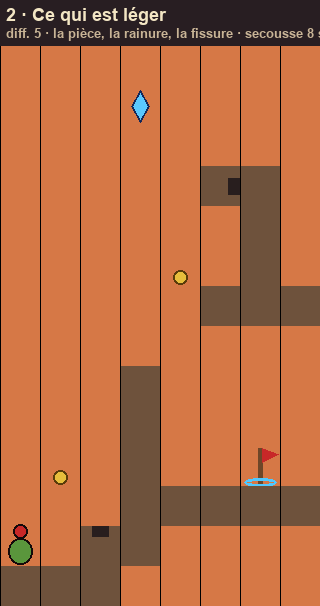
chemin : Nib va et vient entre le bord gauche et le mur (3 de haut). Pousser la pièce de gauche : elle s'envole, Nib ne bouge pas (la règle du poids, à l'envers). La tirer : elle roule vers Nib et tombe dans la rainure u : coincée, c'est un appui. Quand Nib est plaqué contre le mur, la pousser : il monte de 3,4 cases et se pose sur le plateau de droite (la sortie y est, éteinte). éclat : très haut, au-dessus du pilier. La pièce du haut traîne sur la corniche à l'est du pilier : la secousse la balaie vers l'ouest et la coince dans la fissure v du pilier ; de la corniche, la pousser alors propulse Nib jusqu'à l'éclat ; il retombe sur la corniche (2 cases) puis redescend au plateau en marchant. piège : trois secousses et les pièces libres ont toutes été balayées hors du plateau ; tirer la pièce du haut trop tôt la fait tomber. fait monter : la règle du poids, l'ordre (la rainure, puis laisser la secousse faire la fissure).
3 · La lance diff. 5 · la lance, roche et boue
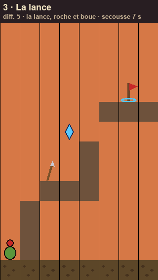
chemin : la lance est plantée en haut (L). Nib marche dans la boue, bute contre le premier mur (1 de haut… il demi-tourne). Tirer la lance : elle revient dans la main de Gorm, Nib s'arrête, baisse la tête (« c'est la mienne »). La jeter (doigt dessus, glisser loin de Nib, lâcher) : elle se plante dans la boue au pied du mur ; pousser dessus : Nib passe le mur. Recommencer contre le mur de 2, puis le mur de 3 (rangée 6) en la plantant dans la ROCHE de la corniche (rangée 8). éclat : (à placer à la mesure) au-dessus du mur de 3, côté gauche. piège : plantée dans la boue, la secousse l'arrache et l'emporte vers l'ouest (la rappeler aussitôt, sinon elle tombe hors de la carte et revient à sa place de départ). La roche est plus loin. fait monter : lancer (viser), la matière du sol, rappeler à temps.
4 · Masses égales diff. 5 · le chariot
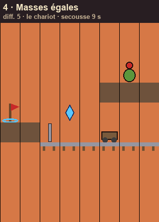
chemin : Nib en haut à droite ; un chariot sur des rails en contrebas, au-dessus du vide. Tirer le chariot : poids égaux, chacun fait la moitié du chemin ; ils se rejoignent au-dessus du vide et Nib tombe dedans (moins de 2 cases). Attendre la secousse : elle pousse le chariot vers l'ouest le long des rails ; les rails s'arrêtent net contre la corniche de la sortie (butoir cassé) : arrivé trop vite, le chariot s'y fracasse et Nib est éjecté. Pousser sur le poteau de fer p pour freiner, et arriver doucement contre la corniche ; Nib en descend en marchant. éclat : dans un renfoncement de la roche au-dessus des rails : on ne l'attrape qu'en freinant JUSTE dessous (le chariot doit s'y arrêter un instant). piège : tirer le chariot quand la secousse arrive (il part tout seul, Nib n'est pas dedans) ; freiner trop tard. fait monter : masses égales, attendre sans rien faire, doser le freinage.
5 · Le prix de la halte diff. 6 · la pierre fissurée
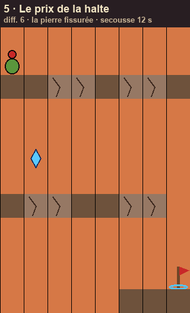
chemin : une suite de corniches, certaines en pierre fissurée. Laisser passer chaque secousse en retenant Nib (halte) — mais seulement sur la roche, loin du bord : arrêté sur la pierre fissurée, elle se brise en 1 s. éclat : sous la première corniche, à gauche : tomber exprès de 2 cases au bon endroit (sur la roche du milieu de la 2e corniche). piège : la secousse qui le trouve arrêté au bord le pousse dans le vide. fait monter : le timing de la halte, la lecture du sol.
6 · Fissures et rivets diff. 6 · rivé / fiché, la secousse qui transporte
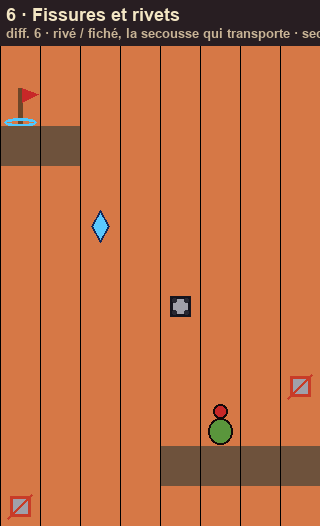
chemin : Nib en bas à droite ; la sortie en haut à gauche, hors de portée. L'appui fiché de la paroi de droite (x) : le tirer pendant que la secousse arrive — elle l'arrache et le lance vers l'ouest à toute vitesse ; Nib, accroché au fil, part avec. Lâcher au-dessus de l'appui rivé r, le tirer pour s'y suspendre (il tient, lui), puis le pousser vers le haut à gauche : la corniche de la sortie. éclat : au bout du vol de l'appui arraché, si l'on ne lâche pas trop tôt. piège : l'appui fiché d'en bas à gauche : tiré par erreur pendant une secousse, il emporte Nib… dans le vide à l'ouest. fait monter : prévoir la secousse, se laisser emporter, lâcher au bon endroit.
7 · Contrepoids diff. 6 · la poulie
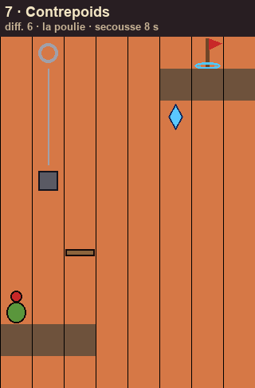
chemin : tirer le contrepoids K (fer) fait monter la plateforme H tant qu'on tire ; Nib marche dessus. On ne peut pas tirer et retenir à la fois : tirer pendant qu'il marche sur H, lâcher pour le retenir quand H n'est pas à la bonne hauteur. Le fil ne hisse H que jusqu'à 1 case sous la corniche de la sortie : c'est la secousse qui donne le dernier cran. éclat : à la hauteur du dernier cran, au-dessus du bord de la corniche : Nib ne le touche que si H est montée d'un cran par la secousse au moment où il passe dessous. piège : lâcher le fil = H redescend ; Nib qui marche sur H au mauvais moment tombe du bord. fait monter : alterner tirer et retenir, laisser la secousse finir le travail.
8 · Hampes diff. 6 · se balancer
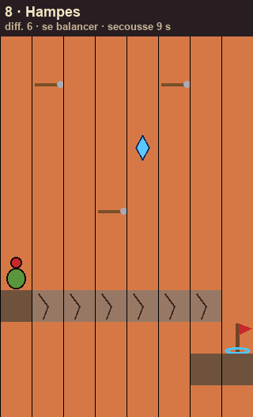
chemin : doigt tenu sur un bout de fer au-dessus de Nib : il se balance au bout du fil ; lâcher au point haut pour atteindre la hampe suivante ; le sol s'effrite sous lui (pierre fissurée). éclat : entre la 2e et la 3e hampe, au sommet de l'arc. piège : la secousse freine le balancement si elle le prend du mauvais côté. fait monter : le rythme, le moment du lâcher.
9 · La pluie de pièces diff. 7 · les pièces qui tombent
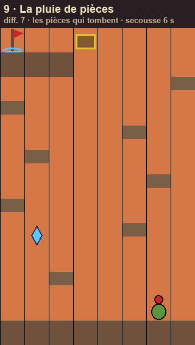
chemin : remonter un puits : Nib part en bas, la sortie est en haut à gauche, à côté du coffre éventré. À chaque secousse, 3 à 5 pièces tombent du coffre et rebondissent de saillie en saillie. Pousser une pièce À L'INSTANT où elle touche la saillie sous Nib le soulève jusqu'à la saillie suivante ; pousser une pièce encore en l'air ne soulève rien. éclat : au milieu du puits, sous une saillie : on ne l'atteint qu'en lâchant la poussée tôt pour retomber dessus. piège : les pièces tombent n'importe où ; il faut choisir dans chaque pluie celle qui va atterrir sous Nib. fait monter : le moment du contact, choisir la bonne pièce, sous pression (une secousse toutes les 6 s).
10 · Nib pousse diff. 6 · la caisse
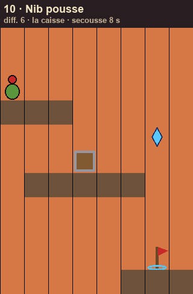
chemin : la caisse cerclée est trop lourde pour Gorm ; Nib la pousse en marchant jusqu'au bord pour en faire une marche ; la secousse la repousse d'une case. éclat : (à placer) derrière la caisse, accessible seulement si elle est au bon endroit. piège : un pas de trop et la caisse tombe dans le vide. fait monter : pousser, retenir, attendre.
11 · Le champ des lances diff. 7 · arracher
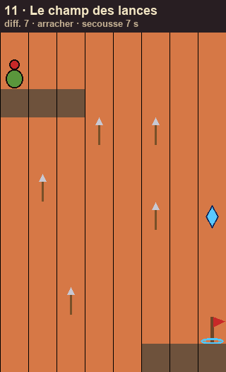
chemin : chaque arme plantée est un appui ; tirée plus de 1,5 s, elle s'arrache et vient dans la main ; on la replante (comme la lance) là où il n'y a pas d'appui. L'ordre des prises dessine le chemin. éclat : derrière une arme qu'il faut arracher puis replanter. piège : arracher l'appui dont on aura besoin. fait monter : planifier.
12 · Chaînes diff. 7 · la lance-crochet
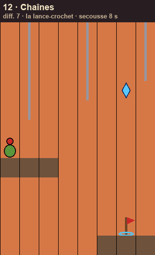
chemin : jeter la lance par-dessus une chaîne et la rappeler : elle s'accroche, Nib pend au bout ; la secousse balance les chaînes ; passer de chaîne en chaîne. éclat : entre la 2e et la 3e chaîne, au sommet du balancement. piège : une seule chaîne à la fois. fait monter : la lance comme crochet, le rythme des chaînes.
13 · La biche diff. 6 · calmer, l'essence
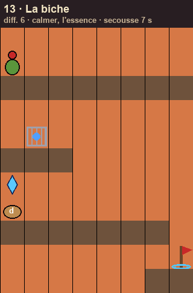
chemin : à chaque secousse, une biche affolée traverse vers l'ouest, droit sur Nib. La calmer (doigt sur elle, glisser vers Nib) coûte de l'essence ; la réserve apparaît ; tirer la grille G libère une fiole. éclat : derrière la grille. piège : retenir Nib sans calmer la biche = elle le bouscule dans le vide. fait monter : une ressource, un choix à chaque secousse.
14 · Le sanglier diff. 6 · exciter, deux façons
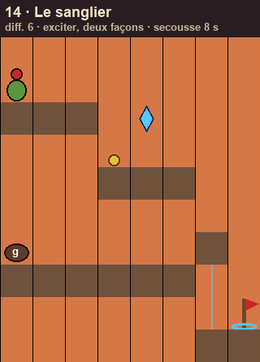
chemin : une barricade (|). Exciter le sanglier (glisser loin de Nib) quand il regarde la barricade : il charge et la casse (coûte une fiole). Ou, gratuit : à chaque secousse, pousser la pièce dans la barricade ; trois secousses et elle cède. éclat : sur la voie gratuite. piège : exciter le sanglier quand il regarde Nib. fait monter : deux solutions, un prix.
15 · Le choix diff. 7 · trois solutions
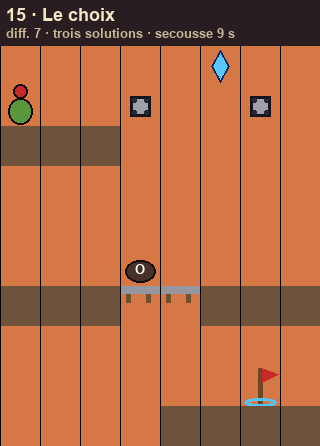
chemin : un ours dort sur le seul pont. Le calmer toute la traversée (vide la fiole) ; l'exciter (il fuit et casse le pont) ; ou passer par les deux appuis rivés en hauteur (gratuit, deux secousses à tenir). éclat : en hauteur, sur la voie des appuis. piège : le niveau suivant demande une fiole. fait monter : le prix d'un choix se paie plus tard.
16 · Le chariot fou diff. 7 · freiner et accélérer
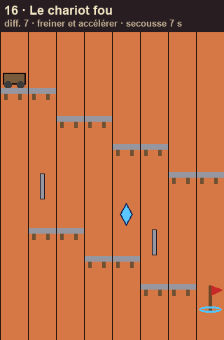
chemin : Nib est dans un chariot sur des rails en pente ; pousser sur un poteau devant = freiner ; tirer = accélérer ; deux morceaux de rail manquent ; la secousse change la vitesse. éclat : au-dessus du 2e trou, au sommet du saut. piège : arriver trop lent ou trop vite au trou. fait monter : régler sa vitesse pour que la secousse tombe bien.
17 · Poids mort diff. 8 · l'armure
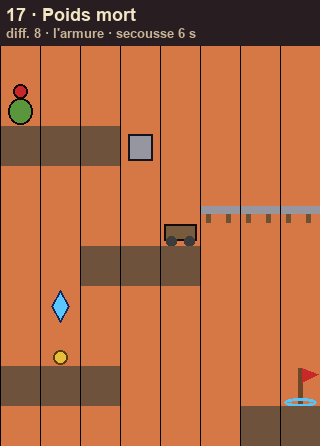
chemin : ramasser l'armure : plus lourd, la secousse ne le recule plus, il tire le chariot sans bouger ; mais une pièce ne le soulève plus : la poser pour monter, la reprendre. éclat : finir sans jamais poser l'armure ? (défi) — l'éclat physique : là où il faut être LÉGER. piège : chaque passage demande un poids différent. fait monter : gérer son propre poids.
18 · La Chasseuse diff. 8 · l'ennemie
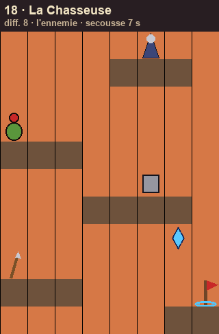
chemin : dès qu'on jette la lance, la Chasseuse la tire à elle. Planter la lance dans la roche (elle ne peut plus l'arracher) ; ramasser l'armure pour tenir face aux secousses ; puis, à l'instant où la secousse la pousse, tirer sur son armure à elle : plus légère que la roche, elle s'envole. Elle s'enfuit. éclat : la faire fuir sans qu'elle ait touché la lance. piège : elle réagit à ce qu'on fait ; l'ordre : abriter, se lester, attaquer. fait monter : tout, contre quelqu'un.